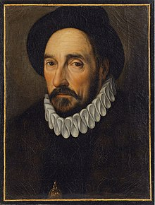

O primeiro tema estudado em Filosofia foi a importância da filosofia segundo a ótica de Kant, junto com
a autoestima e a inteligência, de Montaigne.

Para Immanuel Kant, a filosofia é essencial para entender os limites e capacidades da razão humana. Ele
investiga as condições do conhecimento e da experiência, diferenciando entre o mundo percebido e a
realidade em si. Sua obra, especialmente a "Crítica da Razão Pura", busca reconciliar a racionalidade
científica com a moralidade, defendendo a autonomia e dignidade humanas como fundamentais à razão
prática.
Montaigne enfatizava a importância de aceitar nossas próprias particularidades para manter uma boa
autoestima. Ele argumentava que a verdadeira inteligência não se mede por notas ou diplomas, mas pela
habilidade de resolver problemas do cotidiano. Para Montaigne, sentir-se bem consigo mesmo é crucial, e
a capacidade prática de lidar com desafios diários define a inteligência humana. Assim, ele valoriza
mais a adaptabilidade e o bom senso do que os reconhecimentos formais.
Ainda em filosofia, foram vistos os textos A Condição Humana, de Hannah Arendt, Sociedade do Cansaço, de
Byung-Chul-Han, Inteligência Artificial, de Stephen Hawking e Lições pra o Século XXI, de Harari e
realizado um trabalho em grupo.
O meu grupo ficou responsável pelo texto "Sociedade do Cansaço", em que Byung-Chul Han, analisa como a
cultura contemporânea de desempenho incessante leva ao esgotamento e às doenças psíquicas. Han argumenta
que a pressão por produtividade constante transforma a sociedade em uma fábrica de indivíduos exaustos e
deprimidos. Ele critica essa autocoerção, destacando a necessidade de um equilíbrio entre trabalho e
descanso para uma vida saudável.
Como trabalho final, meu grupo realizou uma entrevista com base nos textos "Lições para o Século XXI",
de Harari, e "Inteligência Artifical", de Stephen Hawking, com o programador Lucas Zimerman Fraulob.